10 |
Sauvegarder la partie |
 |
|

Tout au long du jeu, vous trouverez plusieurs cristaux qui vous permettront de sauvegarder votre avancement. En les frappant, vous ouvrirez le Menu de Sauvegarde où vous pourrez choisir un des emplacements de sauvegarde disponible. Vous pouvez choisir un emplacement vide ou bien sauvegarder sur une sauvegarde précédente mais en faisant cela, vous perdrez votre ancienne sauvegarde. 
Continuer  |
 |
 |
 |